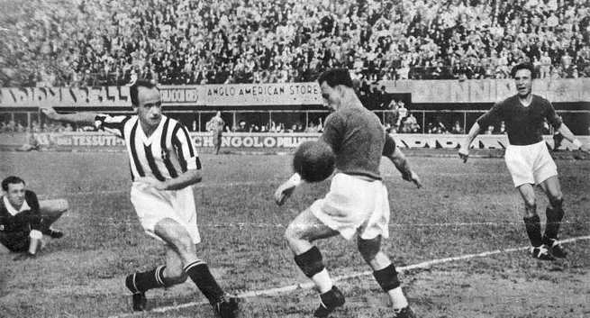

O futebol é o esporte coletivo mais popular do planeta. Segundo dados da Federação Internacional de Futebol (Fifa), cerca de 270 milhões de pessoas atuam em atividades diretamente relacionadas ao esporte (seja como jogador, seja como árbitro)|1|. O futebol moderno surgiu na Inglaterra durante o século XIX, mas relatos históricos apontam que já existiam práticas esportivas parecidas. Atualmente, grandes competições de futebol são organizadas todos os anos por diferentes entidades futebolísticas (nacionais, continentais ou internacionais). E o esporte popularizado entre as massas de trabalhadores pobres é um segmento bilionário que movimenta muito dinheiro e move interesses políticos mundo afora.
Como vimos, o futebol moderno surgiu apenas no século XIX, mas sabe-se que milhares de anos atrás já eram praticados pela humanidade esportes com características semelhantes. O vestígio de prática similar ao futebol mais antigo do qual se tem conhecimento remonta à China de 3000 a. Existem evidências de esportes semelhantes ao futebol sendo praticado por japoneses, egípcios, além de gregos e romanos antigos. Eduardo Galeano traz relatos de algo parecido com o futebol sendo praticado na Inglaterra durante a Idade Média.
Alguns séculos depois, ainda na Inglaterra, surgiria o futebol moderno. As regras deste novo esporte, o futebol, foram estabelecidas em 1846 pela Universidade de Cambridge. As primeiras normas ainda estavam em um estágio extremamente embrionário e apresentavam algumas diferenças em relação ao futebol praticado atualmente. Galeano aponta que as regras estabelecidas inicialmente para o futebol «não limitavam o número de jogadores, nem a extensão do campo, nem a altura do arco, nem a duração das partidas».